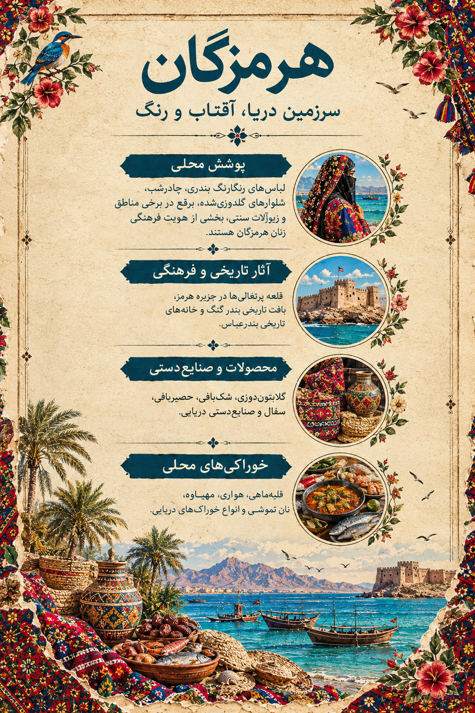

۱. تصویر هرمزگان؛ روایت یک سرزمین
1. Hormozgan in Art: A Land's Story
در این اثر، پوشش رنگارنگ زن هرمزگانی در کنار دریا، لنجهای سنتی، نخلها و نشانههایی از زندگی ساحلی قرار گرفته است. رنگهای زنده لباس و نقشهای پارچه، در کنار آبی خلیج فارس، روایتی تصویری از فرهنگ و زندگی مردم جنوب میسازند.
This artwork brings together colorful women's dress, the sea, traditional lenj boats, palm trees, and details of coastal life. Vivid fabrics and the blue waters of the Persian Gulf tell a visual story of southern culture.

اثر تصویری هرمزگان از مجموعه «ایران، هزار رنگ»
The Hormozgan artwork from “Iran, A Thousand Colors”
از نقش پارچههای رنگارنگ تا حرکت لنجها بر آب، هرمزگان قصهی زندگی در کنار دریاست.
From colorful fabrics to lenj boats moving across the water, Hormozgan tells a story of life beside the sea.
این تصویر، اثر هنری مجموعه است؛ توضیحات این صفحه برای معرفی فرهنگی و تاریخی استان ارائه شدهاند.
This is the original artwork created for the collection. The text provides cultural and historical context about the province.
۲. پوشش زنان هرمزگان؛ رنگ و هویت
2. Women's Dress in Hormozgan: Color and Identity
پوشاک سنتی زنان هرمزگان با توجه به شهر، روستا، شیوه زندگی و مناسبتها تنوع زیادی دارد. لباسهای رنگارنگ، شلوارهای تزئینشده، روسریها و پوششهای سر و صورت از عناصر قابل توجه این فرهنگ پوششی هستند. نوع پارچه، نقشدوزی و شیوه پوشیدن لباس در نقاط مختلف استان یکسان نیست.
Traditional women's clothing in Hormozgan varies by town, village, lifestyle, and occasion. Colorful garments, decorated trousers, scarves, and different forms of head and face coverings are notable elements. Fabrics, embroidery, and clothing styles differ across the province.

لیبل اختصاصی هرمزگان؛ راهنمای تصویری پوشش، میراث و خوراک محلی
Hormozgan's exhibition label: a visual guide to dress, heritage, and local food
لباسهای رنگارنگColorful Garments
رنگهای پرنشاط و پارچههای طرحدار در بسیاری از نمونههای پوشاک محلی دیده میشوند. ترکیب لباسها بسته به منطقه و موقعیت استفاده متفاوت است.
Bright colors and patterned fabrics appear in many examples of local clothing. Garment combinations vary by area and occasion.
گلابتوندوزیGolābatun Embroidery
در این هنر، نخهای فلزی براق برای ایجاد نقشهای تزئینی روی پارچه به کار میروند. گلابتوندوزی در تزئین برخی لباسها و پوشاک مجلسی جنوب جایگاه دارد.
This craft uses shiny metallic threads to create decorative patterns on fabric. Golābatun embroidery is used to embellish some southern garments and ceremonial clothing.
خوسدوزی و بادلهدوزیKhos and Badleh Embroidery
این هنرهای رودوزی با نوارها و نقشهای براق، به تزئین پارچه و لباس کمک میکنند. روش اجرا و کاربرد آنها در جوامع محلی میتواند متفاوت باشد.
These embroidery traditions use shiny strips and patterns to decorate fabrics and clothing. Their techniques and uses may differ between local communities.
پوشش سر و صورتHead and Face Coverings
روسری و پوششهای مختلف سر در پوشاک زنان منطقه دیده میشوند. برقع نیز در برخی جوامع ساحلی و بخشهایی از استان کاربرد فرهنگی دارد؛ شکل و شیوه استفاده از آن یکسان نیست.
Scarves and different head coverings are part of women's dress in the region. The burqa is also used in some coastal communities, though its form and use are not uniform.
۳. شهرها و روستاها؛ زندگی در کنار خلیج فارس
3. Towns and Villages: Life Beside the Persian Gulf
فرهنگ هرمزگان در بندرها، بازارها، روستاهای ساحلی و آبادیهای کشاورزی شکل گرفته است. دریانوردی، ماهیگیری، نخلداری، سفالگری و بافت حصیر بخشی از تجربه زندگی در نقاط مختلف استاناند.
Hormozgan's culture has developed through its ports, markets, coastal villages, and agricultural settlements. Seafaring, fishing, date cultivation, pottery, and palm weaving are part of life in different areas of the province.
بندرعباسBandar Abbas
مرکز استان و بندری مهم در خلیج فارس که بازارهای محلی، خوراک دریایی و پوشاک رنگارنگ بخشی از سیمای فرهنگی آن هستند.
The provincial capital is an important Persian Gulf port, known for its local markets, seafood, and colorful clothing traditions.
مینابMinab
میناب به بازارهای محلی، کشاورزی گرمسیری، حصیربافی و سنتهای صنایعدستی شناخته میشود.
Minab is known for its local markets, tropical agriculture, palm weaving, and handicraft traditions.
بندر کنگBandar Kong
این بندر تاریخی با خانههای بومی، بادگیرها و میراث دریانوردی، بخشی از تاریخ تجارت دریایی جنوب ایران را روایت میکند.
This historic port, with its traditional houses, windcatchers, and seafaring heritage, reflects the history of maritime trade in southern Iran.
بستک و مناطق پیرامونBastak and Surrounding Areas
بافتهای مسکونی و معماری بومی این منطقه، جلوههایی از سازگاری زندگی با آبوهوای گرم و سنتهای فرهنگی محلی را نشان میدهند.
Local settlements and architecture here reflect ways of adapting to the hot climate and preserving regional traditions.
یادداشت: جزیره قشم در این صفحه بهصورت مستقل معرفی نمیشود تا اطلاعات آن با صفحه اختصاصی قشم تکرار نشود.
Note: Qeshm Island is not covered separately here, to avoid duplicating content on its dedicated page.
۴. تاریخ، معماری و طبیعت
4. History, Architecture, and Nature
قلعه پرتغالیهای جزیره هرمزPortuguese Castle on Hormuz Island
این قلعه یادگاری از حضور پرتغالیها در منطقه خلیج فارس در سدههای گذشته است. موقعیت ساحلی و بقایای معماری آن، بخشی از تاریخ رقابت بر سر مسیرهای دریایی را بازگو میکند.
This castle dates from the Portuguese presence in the Persian Gulf centuries ago. Its coastal location and surviving structures reflect the history of competition over maritime routes.
بافت تاریخی بندر کنگHistoric Urban Fabric of Bandar Kong
خانههای بومی و عناصر معماری سازگار با آبوهوای گرم، در کنار میراث دریانوردی، بندر کنگ را به یکی از مکانهای مهم برای شناخت تاریخ ساحلی هرمزگان تبدیل کردهاند.
Traditional houses and climate-adapted architectural features, together with its seafaring heritage, make Bandar Kong an important place for understanding Hormozgan's coastal history.
پل تاریخی لاتیدانHistoric Latidan Bridge
پل لاتیدان از سازههای تاریخی مسیرهای ارتباطی جنوب ایران است و اهمیت راهها و پیوندهای تجاری گذشته را یادآوری میکند.
Latidan Bridge is a historic structure along southern Iran's old routes, recalling the importance of transport and trade connections in the past.
سواحل و نخلستانهاCoastlines and Palm Groves
دریا، نخلستانها و آبوهوای گرم بر اقتصاد، خوراک، صنایعدستی و شیوه زندگی مردم استان تأثیر گذاشتهاند. این پیوند در نقش پارچهها، محصولات بومی و معماری محلی نیز بازتاب دارد.
The sea, palm groves, and hot climate influence the province's economy, cuisine, handicrafts, and everyday life. This relationship is also reflected in textiles, local products, and architecture.